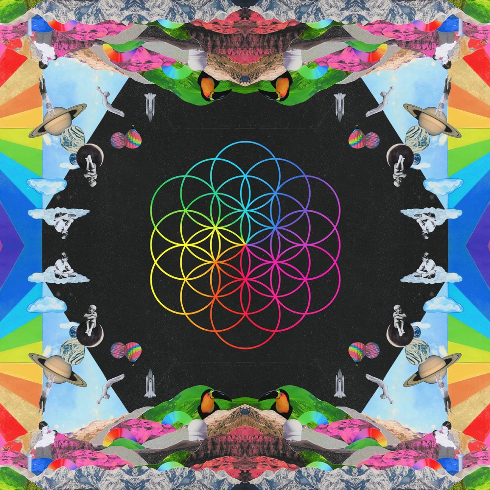
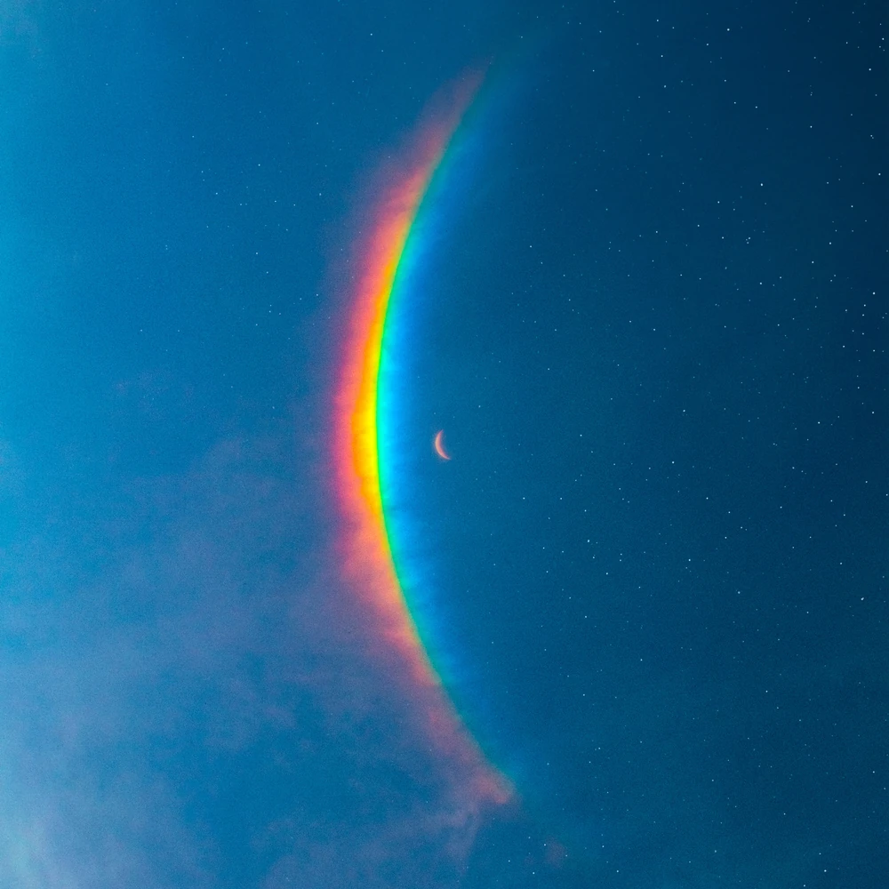
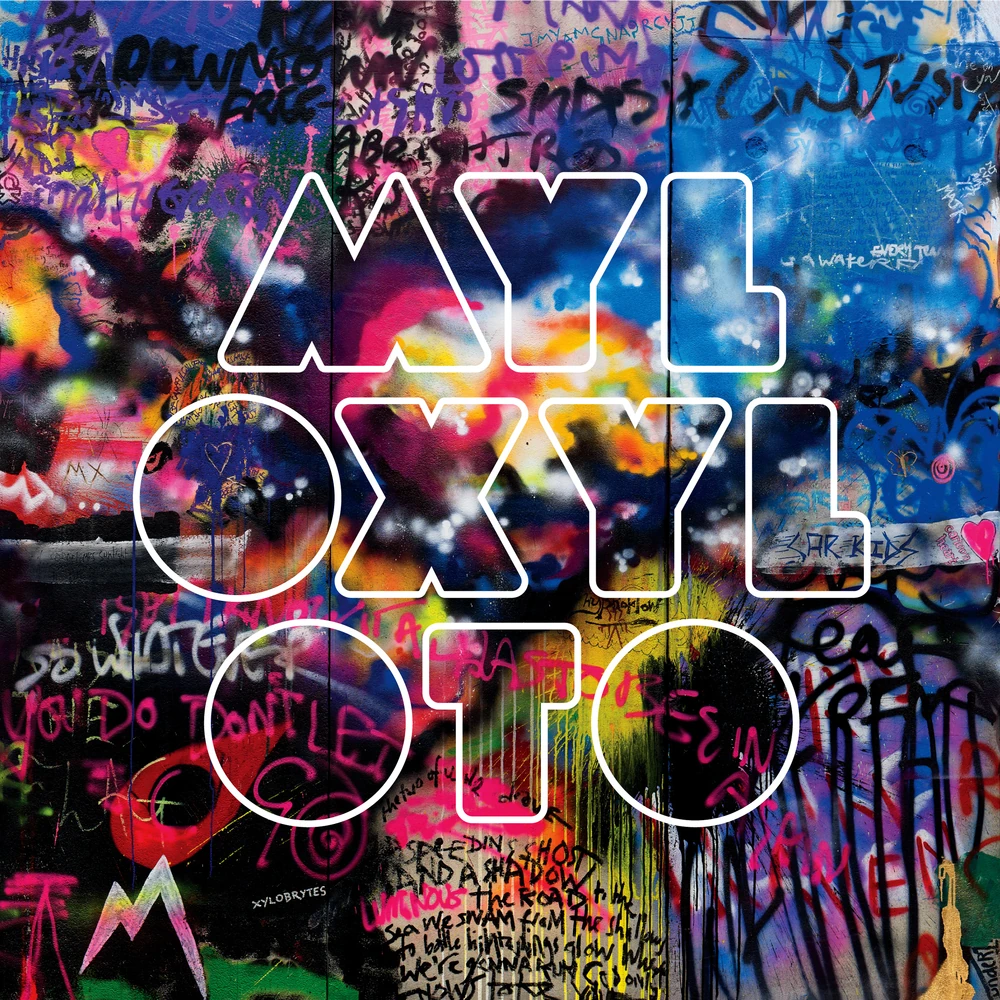
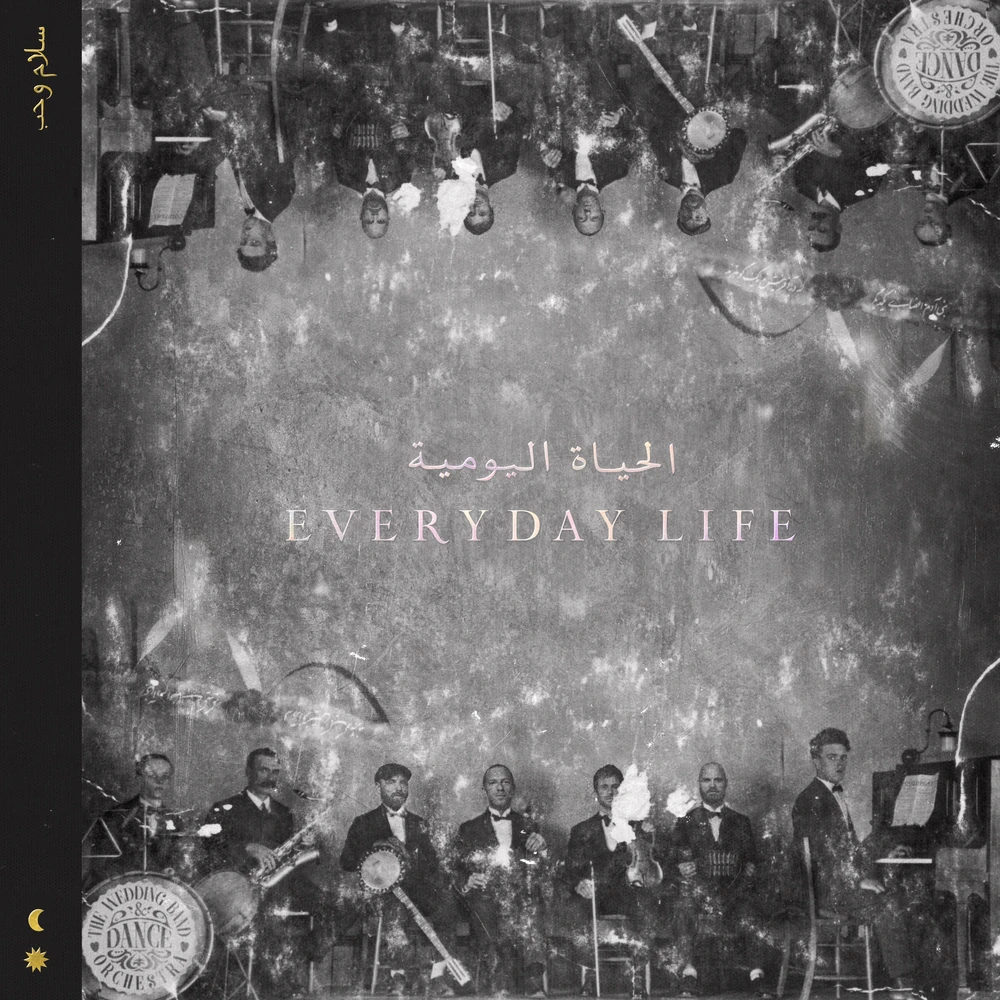
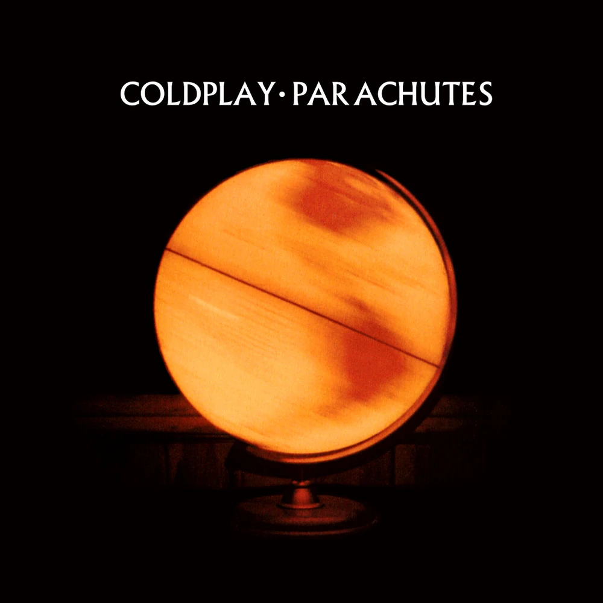
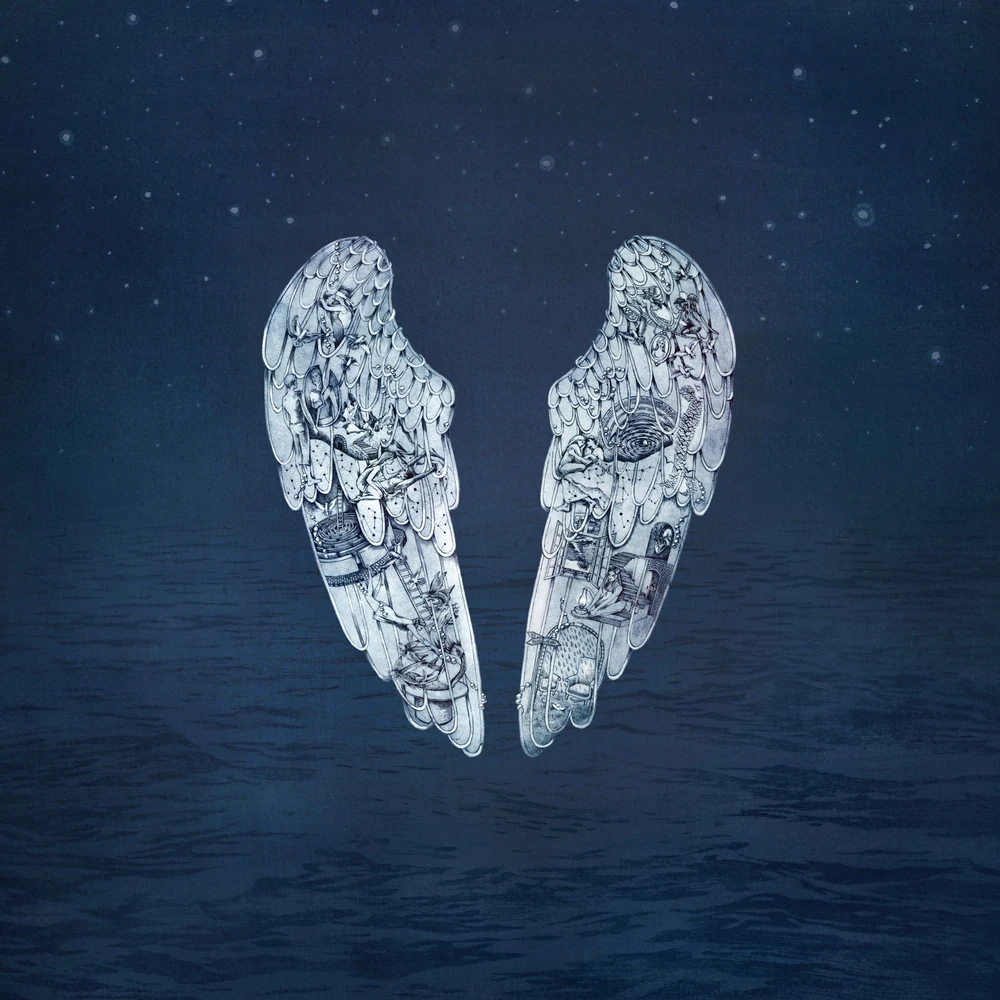
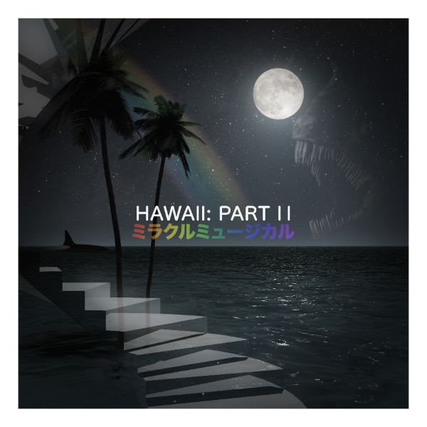
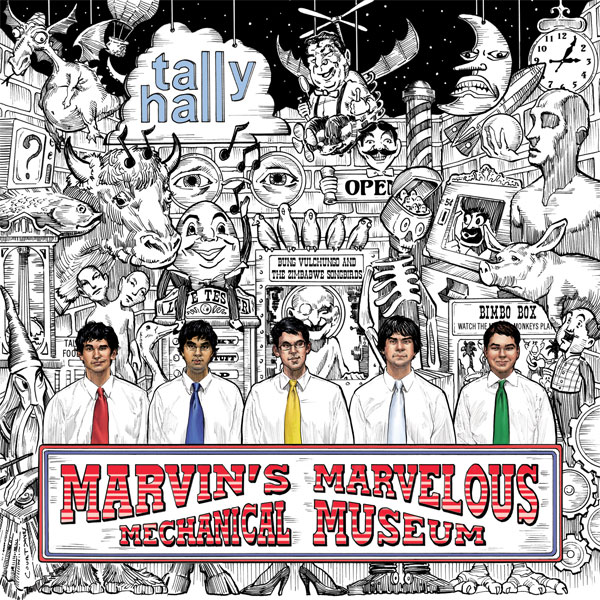
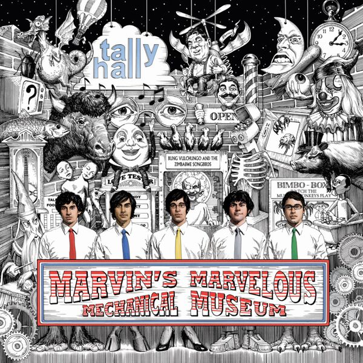

I haven't written the actual rating explanation yet.
I haven't written my actual reviews of each of the albums (I just rated them and some tracks as well). The reviews will be where I say [album title] is [artist's name] nth album
I haven't finished ranking tracklistings past A Head Full of Dreams
I haven't customized the colors for anything past A Head Full of Dreams
.jpg)
Music of the Spheres (Full title being: Music of the Spheres Volume 1: From Earth With Love) is Coldplay's 9th LP.
A Head Full of Dreams is Coldplay's 7th LP.
Moon Music (Full title being: Music of the Spheres Volume 2: Moon Music) is Coldplay's 10th LP.
Mylo Xyloto is Coldplay's 5th LP.
Everyday Life is Coldplay's 8th LP.
A Rush of Blood to the Head is Coldplay's 2nd LP.
Parachutes is Coldplay's 1st LP.
Ghost Stories is Coldplay's 6th LP.
X&Y is Coldplay's 3rd LP.

Viva La Vida or Death and All His Friends is Coldplay's 4th LP.

Hawaii Part II is the only album by Miracle Musical (ミラクルミュージカル) which is a side project spearheaded by band member Joe Hawley and with contributions from every band member except Andrew.
Marvin's Marvelous Mechanical Museum (2005) is Tally Hall's 1st LP.
Marvin's Marvelous Mechanical Museum (2008) is a remake of Tally Hall's 1st LP.
Good & Evil is Tally Hall's 2nd LP.